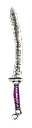

Filters:
Achelous' Waterblade
172 - 202 Damage
20% Pierce Ratio
Speed: Fast
375 Frostburn Damagve over 3.0 Seconds
60 Cold Damage
10.0% Chance of 90% Reduction to Enemy's Health
+25% Frostburn Retaliation with +25% Improved Duration
+50% Health Regeneration
+50% Energy Regeneration
-10% Recharge
+3 to Hurricane's Spirit
+3 to Bewildering Speed
Grants Skill : Achelous' Frost (Activated on attack)
A single attack can unleash a violent blast of frost so cold that it freezes your enemies' bloodstream and makes them open to attacks.
60.0 Second(s) Recharge
95 Energy Cost
4.0 Second Duration
8.0 Meter Radius
LVL 68, STR 427, DEX 340
Ajax' Lberias
75 - 84 Damage
10% Pierce Ratio
Speed: Fast
+22% Strength
-20 Intelligence
+16 Dexterity
+25% Attack Speed
+2 to Inhumane Physique
LVL 31, STR 243, DEX 202
Amen-Ra's Magebane
156 - 163 Damage
10% Pierce Ratio
Speed: Fast
+15% Physical Damage
15.0% Chance of 75 Bonus Damage
10 - 20% Energy Drain (100% of lost Energy as Damage)
44 Reduced Armor for 3.0 Seconds
32% Elemental Resistance
80% Energy Leech Resistance
80% Skill Disruption Protection
+27 Dexterity
+22% Health Regeneration
Grants Skill : Spell Breaker (Activated on attack)
A pulse of negatively charged energy dispels hostile enchantments on allies or, when cast on enemies, breaks their beneficial enchantments and negates a portion of their energy. This attack inflicts bonus damage when used against magical creatures.
6.0 Second(s) Recharge
46 Energy Cost
6.0 Meter Radius
80 Damage
84% Energy Drain
+50% Damage to Magical
LVL 47, STR 355, DEX 286
Ammit's Fang
84 - 88 Damage
15% Pierce Ratio
Speed: Very Fast
100 Life Leech per Second
+45% Life Leech
15.0% Chance of +300% Energy Drain Damage Ratio
7% of Attack damage converted to Health
6 - 12% Energy Drain
100% Life Leech Resistance
+17 Dexterity
Grants Skill : Soul Vortex
LVL 35, STR 267, DEX 220
Ancient Tartessian Blade

53 - 57 Damage
10% Pierce Ratio
Speed: Very Fast
Difficulty : Normal
30% Lightning Resistance
+200 Health
+150 Energy
LVL 28, STR 183, DEX 155
Ancient Tartessian Blade
117 - 122 Damage
10% Pierce Ratio
Speed: Very Fast
Difficulty : Epic
60% Lightning Resistance
+350 Health
+250 Energy
LVL 42, STR 297, DEX 245
Ancient Tartessian Blade
182 - 190 Damage
10% Pierce Ratio
Speed: Very Fast
Difficulty : Legendary
90% Lightning Resistance
+500 Health
+350 Energy
LVL 52, STR 373, DEX 305
Antediluvian Blade

53 - 57 Damage
20% Pierce Ratio
Speed: Very Fast
Difficulty : Normal
33 Burn Damage per Second
+0% Burn Damage with +33% Improved Duration
33 Poison Damage per Second
+0% Poison Damage with +33% Improved Duration
Bonus to All Pets:
20 Poison Damage per Second
+0% Poison Damage with +33% Improved Duration
LVL 28, STR 197, DEX 166
Antediluvian Blade
117 - 122 Damage
20% Pierce Ratio
Speed: Very Fast
Difficulty : Epic
66 Burn Damage per Second
+0% Burn Damage with +66% Improved Duration
66 Poison Damage per Second
+0% Poison Damage with +66% Improved Duration
Bonus to All Pets:
40 Poison Damage per Second
+0% Poison Damage with +66% Improved Duration
LVL 42, STR 311, DEX 256
Antediluvian Blade
182 - 190 Damage
20% Pierce Ratio
Speed: Very Fast
Difficulty : Legendary
100 Burn Damage per Second
+0% Burn Damage with +100% Improved Duration
100 Poison Damage per Second
+0% Poison Damage with +100% Improved Duration
Bonus to All Pets:
60 Poison Damage per Second
+0% Poison Damage with +100% Improved Duration
LVL 52, STR 387, DEX 316
Bearer of Decay
108 - 114 Damage
10% Pierce Ratio
Speed: Fast
20.0% Chance of 276 Poison Damage over 3.0 Seconds
20 Instant Poison Damage
30% Poison Resistance
10% Vitality Damage Resistance
+12 Strength
-2.0 Health Regeneration per second
+60 Offensive Ability
+1 to Antidote
LVL 32, STR 220, DEX 186
Bereaving Touch
136 - 146 Damage
30% Pierce Ratio
Speed: Very Fast
+36% Pierce Damage
+66% Instant Poison Damage
77 Instant Poison Damage
50% Energy Leech Resistance
+25% Attack Speed
+25% Casting Speed
-18% Shield Recovery Time
+2 to Poison Weapons
+2 to Black Widow
Bonus to All Pets:
+20% Pierce Damage
+20% Poison Damage
50 Instant Poison Damage
LVL 48, STR 311, DEX 253
Bite of Anubis
87 - 93 Damage
20% Pierce Ratio
Speed: Fast
20.0% Chance of +400% increased Pierce Ratio
204 Poison Damage over 3.0 Seconds
+25% Poison Damage
60 Instant Poison Damage
+44 Offensive Ability
+20% Attack Speed
Grants Skill : Charge
LVL 35, STR 267, DEX 220
Blacksteel Executioner
77 - 81 Damage
25% Pierce Ratio
Speed: Fast
Difficulty : Normal
22 - 33 Fire Damage
1.0% Chance of 90% Reduction to Enemy's Health
80 Reduced Armor for 3.0 Seconds
LVL 34, STR 226, DEX 189
Blacksteel Executioner
146 - 150 Damage
25% Pierce Ratio
Speed: Fast
Difficulty : Epic
55 - 66 Fire Damage
3.0% Chance of 90% Reduction to Enemy's Health
160 Reduced Armor for 3.0 Seconds
LVL 46, STR 330, DEX 271
Blacksteel Executioner
211 - 215 Damage
25% Pierce Ratio
Speed: Fast
Difficulty : Legendary
77 - 88 Fire Damage
5.0% Chance of 90% Reduction to Enemy's Health
240 Reduced Armor for 3.0 Seconds
LVL 56, STR 421, DEX 343
Blade of Ishtar
93 - 98 Damage
10% Pierce Ratio
Speed: Fast
16 - 22 Bonus Damage
26.0% Chance of 50 Reduced Physical Damage for 3.0 Seconds
+25 Dexterity
+20% Health Regeneration
+15% Movement Speed
5% Chance to Dodge Attacks
5% Chance to Avoid Projectiles
Grants Skill : Adrenaline
LVL 36, STR 275, DEX 226
Blaze Blade

80 - 87 Damage
10% Pierce Ratio
Speed: Fast
+15% Fire Damage
+15% Burn Damage
40 Fire Damage
30% Fire Resistance
+30% Attack Speed
+1 to Blade Blaze
+1 to Fiery Strikes
LVL 38, STR 275, DEX 226
Bonesaw
34 - 40 Damage
20% Pierce Ratio
Speed: Fast
+20% Physical Damage
20% Chance of:
45 - 90 Bleeding Damage over 3.0 Seconds
+20% Bleeding Damage
50% Slower Movement for 3.0 Seconds
8% Bleeding Resistance
+17 Strength
+17 Intelligence
+17 Dexterity
+10% Attack Speed
LVL 23, STR 165, DEX 142
Brightblade
60 - 67 Damage
15% Pierce Ratio
Speed: Very Fast
+15% Total Damage
10% Chance of:
1.0 second(s) of Stun
4.0 second(s) of Skill Disruption
30 Piercing Damage
+75 Offensive Ability
+10% Increased Experience
Grants Skill: Lightning Dash
LVL 29, STR 220, DEX 270
Cackling Witch

135 - 142 Damage
15% Pierce Ratio
Speed: Fast
159 - 210 Poison Damage over 3.0 Seconds
+34% Instant Poison Damage
+34% Poison Damage with +20% Improved Duration
+34% Vitality Damage
+34% Vitality Decay with +20% Improved Duration
100 Vitality Damage
15 Reduced Resistances for 3.0 Seconds
15% Reduction in Poison Duration
15% Reduction in Vitality Decay Duration
15% Reduction in Life Leech Duration
+42 Defensive Ability
+16% Attack Speed
-8% Energy Cost
+2 to School Poison
+2 to Rot Zone
Grants Skill : Rot Zone (Activated upon taking damage)
Plague the air of an area, to spread disease and death to those that inhale it.
8.0 Second(s) Recharge
60 Energy Cost
8.0 Second Duration
5.0 Meter Radius
15% Chance of:
135 Poison Damage over 3.0 Seconds
16% Reduction to Enemy's Health
74 Instat Poison Damage
74 Vitality Damage
LVL 51, STR 316, DEX 292
Chang-Kuo Lau's Steel Blur
90 - 97 Damage
10% Pierce Ratio
Speed: Very Fast
30 Physical Retaliation
30 Piercing Retaliation
+19 Dexterity
+115 Health
+46 Offensive Ability
+46 Defensive Ability
6% Chance to Avoid Projectiles
+2 to Slash Flurry
Grants Skill: Chang-Kuo Lau's Steel Blur
LVL 38, STR 283, DEX 232
Cleopatra's Short Sword
24 - 29 Damage
10% Pierce Ratio
Speed: Fast
+20% Physical Damage
54 - 78 Poison Damage over 3.0 Seconds
+20% Poison Damage
8% Pierce Resistance
+17 Dexterity
+10% Energy Regeneration
LVL 14, STR 125, DEX 110
Crimsonbolt Steelblade
172 - 186 Damage
10% Pierce Ratio
Speed: Very Fast
210 Bleeding Damage over 3.0 Seconds
+80% Bleeding Damage
210 Electrical Burn Damage over 3.0 Seconds
+60% Lightning Damage
+60% Electrical Burn Damage
+4.0 Energy Regeneration per second
-15% Energy Cost
Grants Skill : Crimson Call (Activated on attack)
Small ornamental parts of the hilt fly off the dagger and manifest in the shape of two eerie ravens, returning to their original form and place once they can no longer sustain their lifelike form.
15.0 Second(s) Recharge
Extra Life Time 30 Seconds
2 Summon Limit
Crimson Raven Attributes:
600 Health
400 Energy
Crimson Raven Abilities:
Basic Attack
150 Bleeding Damage over 3.0 Seconds
80 Piercing Damage
Bolt Rage
14.0 Second(s) Recharge
80 Energy Cost
1.5 Meter Radius
363 Electrical Burn Damage over 3.0 Seconds
203 - 413 Lightning Damage
1.0 second(s) of Stun
Bloodstorm (on Death)
6.0 Meter Radius
300 Bleeding Damage over 3.0 Seconds
250 Lightning Damage
Dodge Attacks
44% Chance to Dodge Attacks
44% Chance to Avoid Projectiles
LVL 70, STR 415, DEX 331
Curved Stormcutter

95 - 100 Damage
10% Pierce Ratio
Speed: Fast
+15% Elemental Damages
+40% Cold Damage
8 - 30 Elemental Damage
10 - 30 Cold Damage
+10% Energy
+5% Total Speed
+10% Attack Speed
33% Weapon Base Damage becomes Elemental
LVL 37, STR 279, DEX 228
Cuttlebone Xiphos
118 - 128 Damage
20% Pierce Ratio
Speed: Very Fast
+15% Physical Damage
+15% Pierce Damage
+15% Vitality Damage
+15% Vitality Decay
+100 Offensive Ability
+20% Attack Speed
10% Chance to Dodge Attack
+3 to Cold Hand of Death
+1 to all skills in Necromancy Mastery
Grants Skill: Onslaught
LVL 42, STR 311, DEX 253
Dagger of Basbona
75 - 79 Damage
30% Pierce Ratio
Speed: Very Fast
+30% Pierce Damage
+77 Offensive Ability
+50% Attack Speed
-20% Recharge
Grants Skill : Thousand Cuts (Activated upon taking melee damage)
A vortex of debris orbits around you at a frightful speed, making you impervious to ranged and melee attacks.
1.0 Seconds Duration
4.0 Meter Radius
300 Bleeding Damage over 3.0 Seconds
75% Chance to Fumble attacks for 1.0 Seconds
50% Chance of Impaired Aim for 2.0 Seconds
25% Chance to Avoid Projectiles
LVL 41, STR 221, DEX 185
Dagger of Boundless Potential
12 Damage
10% Pierce Ratio
Speed: Fast
+35% Physical Damage
+35% Pierce Damage
10.0% Chance for +150% Elemental Damages
+35% Vitality Damage
80% Skill Disruption Protection
+55 Intelligence
+350 Health
10.0% Chance of -80% Recharge
Bonus to All Pets:
+15% Elementqal Damages
40 Elemental Retaliation
20% Slowed Attack Retaliation for 3.0 Seconds
LVL 50, STR 1, DEX 310, INT 387
Dagger of Dawn
170 - 190 Damage
50% Pierce Ratio
Speed: Fast
+40% Pierce Damage
+100 Defensive Ability
+20% Attack Speed
-10% Recharge
+3 to Heavenly Order
+3 to Godly Presence
Bonus to All Pets :
80 Piercing Damage
+15% Attack Speed
LVL 29, STR 205, DEX 174
Dáinsleif
215 - 221 Damage
15% Pierce Ratio
Speed: Fast
25% Slowed for 3.0 Seconds
60% Bleeding Resistance
+40 Strength
+40 Dexterity
+30% Offensive Ability
+20% Attack Speed
+3 to Eternize
+4 to Landslide
LVL 60, STR 387, DEX 310
Deathweaver's Legtip
18 - 22 Damage
20% Pierce Ratio
Speed: Fast
Difficulty : Normal
30 - 45 Poison Damage over 3.0 Seconds
8.0% Chance of +300% Poison Damage
15 Instant Poison Damage
LVL 8, STR 90, DEX 82
Deathweaver's Legtip
74 - 82 Damage
20% Pierce Ratio
Speed: Fast
Difficulty : Epic
99 - 150 Poison Damage over 3.0 Seconds
10.0% Chance of +300% Poison Damage
35 Instant Poison Damage
LVL 34, STR 243, DEX 202
Deathweaver's Legtip
148 - 158 Damage
20% Pierce Ratio
Speed: Fast
Difficulty : Legendary
159 - 225 Poison Damage over 3.0 Seconds
12.0% Chance of +300% Poison Damage
65 Instant Poison Damage
LVL 46, STR 335, DEX 271
Demon-Forged Shortblade

153 - 167 Damage
20% Pierce Ratio
Speed: Very Fast
160 - 360 Bleeding Damage over 3.0 Seconds
20% Chance of:
+100% Burn Damage with +30% Improved Duration
+100% Vitality Damage
+100% Vitality Decay with +30% Improved Duration
34 Piercing Damage
28% Chance to Fumble attacks for 3.0 Seconds
80% Vitality Damage Resistance
+30% Casting Speed
+9% Movement Speed
+4 to Dreadful Impact
LVL 48, STR 372, DEX 300
Despair
101 - 108 Damage
10% Pierce Ratio
Speed: Fast
+15% Pierce Damage
120 Vitality Decay ofer 3.0 Seconds
20% Chance of:
20 - 40% Slower Attack for 3.0 Seconds
20 - 40% Slower Movement for 3.0 Seconds
10.0% Chance of 88 Bonus Damage
20 Reduced Resistances for 3.0 Seconds
+75 Health
+33% Energy Regeneration
LVL 38, STR 283, DEX 232
Divinesteel Edge

102 - 110 Damage
10% Pierce Ratio
Speed: Fast
+15% Physical Damage
20.0% Chance of 117 Burn Damage over 3.0 Seconds
25 Fire Damage
5.0% Chance of 3.0 - 6.0 second(s) of Stun
+2 to Staggering Force
+2 to Celestial Armory
Grants Skill : Refresh (Activated on attack)
Each attack has a chance to speed up the recharge of your abilities by a split second.
-0.4 Second(s) to all Recharge Times
LVL 38, STR 295, DEX 241
Doxa Kalo
132 - 137 Damage
10% Pierce Ratio
Speed: Fast
10.0% Chance of +150% Physical Damage
+20% Pierce Damage
+30.0% Chance of 280 Bleeding Damage over 3.0 Seconds
10 - 20 Bonus Damage
28 - 38 Piercing Damage
+25 Strength
+100 Offensive Ability
LVL 39, STR 299, DEX 244
Dragonbone Blade

183 - 190 Damage
10% Pierce Ratio
Speed: Fast
+100% Physical Damage
+50% Pierce Damage
90 Piercing Damage
5 - 10% Reduction to Enemy's Health
10% of Attack Damage converted to Health
120 Reduced Armor for 3.0 Seconds
-20% Physical Resistance
-40% Vitality Damage Resistance
-12% Total Speed
+1 to all skills in Barbarism Mastery
+1 to all skills in Chaos Mastery
LVL 65, STR 445, DEX 275, INT 275
Drakaina
185 - 192 Damage
10% Pierce Ratio
Speed: Fast
+15% Physical Damage
120 Burn Damage over 3.0 Seconds
+30% Fire Damage
204 Poison Damage over 3.0 Seconds
+34% Instant Poison Damage
+30% Poison Damage
34 Fire Damage
22% Elemental Resistance
50% Poison Resistance
+27 Dexterity
+370 Health
+4.0 Health Regeneration per second
LVL 54, STR 395, DEX 316
Dvergr-Forged Longsword
71 - 75 Damage
15% Pierce Ratio
Speed: Very Fast
Difficulty : Normal
+10% Attack Speed
+30% Damage to Constructs
+30% Damage to Devices
+2 to Celestial Armory
Grants Skill : Magma Strike (Activated upon taking damage)
For a short time, your attacks are empowered with a fire boost.
5.0 Second Duration
19 Damage
17 - 20 Fire Damage
LVL 34, STR 221, DEX 185
Dvergr-Forged Longsword
137 - 141 Damage
15% Pierce Ratio
Speed: Very Fast
Difficulty : Epic
+15% Attack Speed
+30% Damage to Constructs
+30% Damage to Devices
+3 to Celestial Armory
Grants Skill : Magma Strike (Activated upon taking damage)
For a short time, your attacks are empowered with a fire boost.
5.0 Second Duration
36 Damage
32 - 40 Fire Damage
LVL 46, STR 326, DEX 268
Dvergr-Forged Longsword
201 - 205 Damage
15% Pierce Ratio
Speed: Very Fast
Difficulty : Legendary
+20% Attack Speed
+30% Damage to Constructs
+30% Damage to Devices
+4 to Celestial Armory
Grants Skill : Magma Strike (Activated upon taking damage)
For a short time, your attacks are empowered with a fire boost.
5.0 Second Duration
50 Damage
45 - 55 Fire Damage
LVL 56, STR 416, DEX 339
Dyrrhjorr

157 - 162 Damage
15% Pierce Ratio
Speed: Fast
Difficulty : Epic
48 Energy Leech over 3.0 Seconds
-10% Energy Cost
Grants Skill : Power Drain (Activated on low health)
Harvest the arcane energy of your enemies and throw them into a daze.
Cannot be dispelled.
10.0 Second(s) Recharge
2 Active Health Energy per second
10.0 Second Duration
+50% Energy Leech
+20% Stun Duration
8.0% Chance of 3.0 second(s) of Skill Disruption
8.0% Chance of 1.5 second(s) of Stun
LVL 52, STR 330, DEX 271
Dyrrhjorr
230 - 235 Damage
15% Pierce Ratio
Speed: Fast
Difficulty : Legendary
72 Energy Leech over 3.0 Seconds
-15% Energy Cost
Grants Skill : Power Drain (Activated on low health)
Harvest the arcane energy of your enemies and throw them into a daze.
Cannot be dispelled.
10.0 Second(s) Recharge
3 Active Health Energy per second
10.0 Second Duration
+75% Energy Leech
+40% Stun Duration
8.0% Chance of 5.0 second(s) of Skill Disruption
8.0% Chance of 2.0 second(s) of Stun
LVL 62, STR 421, DEX 343
Einherjar's Fate
71 - 75 Damage
10% Pierce Ratio
Speed: Very Fast
Difficulty : Normal
+15% Physical Damage
+25% Damage to Giants
Grants Skill : Blade Blaze
LVL 34, STR 221, DEX 185
Einherjar's Fate
137 - 141 Damage
10% Pierce Ratio
Speed: Very Fast
Difficulty : Epic
+20% Physical Damage
+25% Damage to Giants
Grants Skill : Blade Blaze
LVL 46, STR 326, DEX 268
Einherjar's Fate
201 - 205 Damage
10% Pierce Ratio
Speed: Very Fast
Difficulty : Epic
+25% Physical Damage
+25% Damage to Giants
Grants Skill : Blade Blaze
LVL 56, STR 416, DEX 339
Elemental Reaver
50 - 60 Damage
50 - 60 Fire Damage
50 - 60 Cold Damage
50 - 60 Lightning Damage
50 - 60 Vitality Damage
Speed: Fast
+30% Total Damage
50 - 60 Piercing Damage
-15% Reduction to all Requirements
+1 to all Skills
LVL 53, STR 335, DEX 275
Endless Struggle

213 - 233 Damage
25% Pierce Ratio
Speed: Fast
Set : Sovereign of Void
300 Vitality Decay over 4.0 Seconds
60 - 80 Vitality Damage
18 Reduced Resistances for 4.0 Seconds
238 Vitality Decay Retaliation over 5.0 Seconds
-3.0 Health Regeneration per second
+1.0 Energy Regeneration per second
+20% Attack Speed
+100% Damage to Humans
Grants Skill : Death Ward
Bonus to All Pets:
+10% Total Damage
20% Pierce Resistance
+5% Total Speed
LVL 75, STR 435, DEX 354
Ether Blade
82 - 90 Damage
10% Pierce Ratio
Speed: Fast
25 - 28 Vitality Damage
11% of Attack Damage converted to Health
8% Energy Drain (50% of lost Energy as Damage)
+28 Intelligence
+35% Energy Regenetaion
+20% Attack Speed
-15% Reduction to all Requirements
+25% Damage to Magical
LVL 34, STR 255, DEX 211
Fell Blade
23 - 27 Damage
15% Pierce Ratio
Speed: Very Fast
21% Poison Resistance
+20 Offensive Ability
+15% Attack Speed
+60% Damage to Demons
+2 to Undying Fury
LVL 10, STR 105, DEX 94
Fool's Secret

17 - 26 Damage
10% Pierce Ratio
Speed: Fast
8 Vitality Damage
+15% Increased Experience
-25% Health Regeneration
-25% Energy Regeneration
LVL 8, STR 100, DEX 90
Fu Xi's Tail
101 - 108 Damage
10% Pierce Ratio
Speed: Fast
Set: Legend of Fu Xi
+12% Total Damage
15.0% Chance of 111 - 222 Poison Damage over 3.0 Seconds
14% Chance of one of the following:
2.0 - 3.0 second(s) of Stun
21 - 25 Piercing Damage
21 - 25 Fire Damage
5% Reduction to Enemy's Health
20% Health Regeneration
LVL 25, STR 185, DEX 158
Gaian Khopesh
53 - 57 Damage
100% Pierce Ratio
Speed: Very Fast
Difficulty : Normal
+10% Casting Speed
+10% Movement Speed
50% Weapon Base Damage becomes Elemental
Bonus to All Pets :
27 Piercing Damage
LVL 28, STR 193, DEX 163
Gaian Khopesh
117 - 122 Damage
100% Pierce Ratio
Speed: Very Fast
Difficulty : Epic
+12% Casting Speed
+12% Movement Speed
50% Weapon Base Damage becomes Elemental
Bonus to All Pets :
40 Piercing Damage
LVL 42, STR 307, DEX 253
Gaian Khopesh
182 - 190 Damage
100% Pierce Ratio
Speed: Very Fast
Difficulty : Legendary
+15% Casting Speed
+15% Movement Speed
50% Weapon Base Damage becomes Elemental
Bonus to All Pets :
60 Piercing Damage
LVL 52, STR 383, DEX 313
Gloomweaver's Legtip

182 - 200 Damage
35% Pierce Ratio
Speed: Fast
Set : Gloomweaver's Set
+25% Pierce Damage
10.0% Chance of +190% Instant Poison Damage
130 Instant Poison Damage
+10% Dexterity
+80 Offensive Ability
+25% Damage to Humans
+25% Damage to Beastmen
+1 to Poison Weapons
+1 to Corrode
+1 to all skills in Science Mastery
LVL 58, STR 395, DEX 316
Goldblade

24 - 29 Damage
10% Pierce Ratio
Speed: Fast
15 Bleeding Damage per Second
+20% Bleeding Damage
+20% Poison Damage
5% Reduction to Enemy's Health
40% Slow Resistance
+13 Dexterity
LVL 11, STR 105, DEX 94
Goldfang Khopesh
53 - 57 Damage
30% Pierce Ratio
Speed: Very Fast
Difficulty : Normal
15 Piercing Damage
25 Reduced Armor for 1.0 Seconds
Grants Skill : Enrage (Activated upon casting a debuff)
Monsters don't take your attempts to lower their guard lightly, resulting in berserk fury.
20.0 Second(s) Recharge
8.0 Second Duration
8.0 Meter Radius
+15% Total Damage
+15% Total Speed
-15% Physical Resistance
-15% Pierce Resistance
-15% Elemental Resistance
LVL 28, STR 193, DEX 163
Goldfang Khopesh
117 - 122 Damage
30% Pierce Ratio
Speed: Very Fast
Difficulty : Epic
30 Piercing Damage
50 Reduced Armor for 1.0 Seconds
Grants Skill : Enrage (Activated upon casting a debuff)
Monsters don't take your attempts to lower their guard lightly, resulting in berserk fury.
20.0 Second(s) Recharge
8.0 Second Duration
8.0 Meter Radius
+15% Total Damage
+15% Total Speed
-20% Physical Resistance
-20% Pierce Resistance
-20% Elemental Resistance
LVL 42, STR 307, DEX 253
Goldfang Khopesh
182 - 190 Damage
30% Pierce Ratio
Speed: Very Fast
Difficulty : Legendary
45 Piercing Damage
75 Reduced Armor for 1.0 Seconds
Grants Skill : Enrage (Activated upon casting a debuff)
Monsters don't take your attempts to lower their guard lightly, resulting in berserk fury.
20.0 Second(s) Recharge
8.0 Second Duration
8.0 Meter Radius
+15% Total Damage
+15% Total Speed
-25% Physical Resistance
-25% Pierce Resistance
-25% Elemental Resistance
LVL 52, STR 383, DEX 313
Gram
198 - 202 Damage
10% Pierce Ratio
Speed: Very Fast
+35% Physical Damage
10% Chance of:
999 Bleeding Damage over 3.0 Seconds
+0% Bleeding Damage with +100% Improved Duration
400 Piercing Damage
+160 Defensive Ability
+25% Attack Speed
+25% Damage to Magical
+25% Damage to Telkines
+2 to Champion of the Pit
+2 to Blade Blaze
Grants Skill : Lethal Strike
LVL 64, STR 411, DEX 335
Griefmaker
137 - 145 Damage
15% Pierce Ratio
Speed: Fast
15.0% Chance of +150% Pierce Damage
201 Bleeding Damage over 3.0 Seconds
15.0% Chance of +150% Bleeding Damage with +50% Improved Duration
33 Pierce Damage
+27 Strength
+32 Offensive Ability
LVL 39, STR 299, DEX 244
Heartpierce
17 - 22 Damage
30% Pierce Ratio
Speed: Very Fast
14% Chance of:
30 - 60 Bleeding Damage over 5.0 Seconds
21% Reduction to Enemy's Health
6 - 14 Piercing Damage
11% Pierce Resistance
+18 Offensive Ability
+1 to Ambidexterity
LVL 7, STR 85, DEX 78
Hofud
146 - 150 Damage
10% Pierce Ratio
Speed: Very Fast
146 - 150 Elemental Damage
5 - 10% Energy Drain (50% of lost Energy as Damage)
20% Elemental Resistance
+10% Offensive Ability
50% Weapon Base Damage becomes Elemental
+2 to Conjured Steel
LVL 52, STR 345, DEX 283
Hrunting
144 - 148 Damage
20% Pierce Ratio
Speed: Very Fast
+20% Physical Damage
20.0% Chance of +100% Pierce Damage
105 Bleeding Damage over 3.0 Seconds
78 Piercing Damage
+20% Attack Speed
+30% Damage to Magical
+30% Damage to Giants
+2 to Razor Sharpening
Grants Skill : Burst of Speed (Activated on attack)
Your movements and spellcasting accelerate for a short duration when triggered by a close-range attack.
5.0 Second(s) Recharge
5.0 Second Duration
+40% Total Speed
LVL 54, STR 335, DEX 275
Hue of Lustration

227 - 232 Damage
15% Pierce Ratio
Speed: Fast
+30% Total Damage
+20 Strength
+20 Intelligence
+20 Dexterity
+200 Health
+200 Energy
+75 Offensive Ability
+75 Defensive Ability
+10% Total Speed
Grants Skill : Rainbow Ray (Activated on attack)
A bouncing, multicolored ray of light jumps between nearby enemies, striking them with different damage types.
3.0 Second(s) Recharge
Affects up to 3 targets
50 Energy Cost
30 Damage
30 Piercing Damage
30 Fire Damage
30 Cold Damage
30 Lightning Damage
30 Instant Poison Damage
30 Vitality Damage
3.0 seconds of Skill Disruption
LVL 65, STR 430, DEX 350
Huo Qubing's Ceremonial Blade
163 - 171 Damage
10% Pierce Ratio
Speed: Fast
Set : Huo Qubing's Relics
210 Life Leech over 3.0 Seconds
+44% Life Leech
7% Reduction to Enemy's Health
30.0% Chance of 50-100% reduced Defensive Ability for 3.0 Seconds
10 Reduced Resistances for 3.0 Seconds
+44 Offensive Ability
LVL 45, STR 355, DEX 286
Insanity

Speed: Fast
+35% Total Damage
Chance for one of the following :
400 Fire Damage
400 Cold Damage
400 Lightning Damage
400 Instant Poison Damage
400 Vitality Damage
100% Energy Drain (150% of lost Energy as Damage)
4000 Energy Reserved
+350 Offensive Ability
+20% Total Speed
20% Chance to Dodge Attacks
-50% Recharge
Grants Skill : Insanity (Activated on attack)
Wielding the blade of madness renders the user recklessly self-destructive.
3.0 Second Duration
-40.0 Health Regeneration per second
LVL 75, STR 300, DEX 450, INT 300
Juque
33 - 38 Damage
15% Pierce Ratio
Speed: Very Fast
+15% Physical Damage
+30% Pierce Damage
13% Pierce Resistance
13% Lightning Resistance
+20 Intelligence
+10% Attack Speed
9% Chance to Dodge Attacks
LVL 22, STR 165, DEX 142
Katana

117 - 122 Damage
15% Pierce Ratio
Speed: Fast
Difficulty : Epic
+20% Physical Damage
+40 Offensive Ability
LVL 48, STR 326, DEX 268
Katana
182 - 190 Damage
15% Pierce Ratio
Speed: Fast
Difficulty : Legendary
+30% Physical Damage
+75 Offensive Ability
LVL 58, STR 402, DEX 328
Katharsos
70 - 76 Damage
15% Pierce Ratio
Speed: Very Fast
24 - 38 Vitality Damage
33% Slower Attack for 3.0 Seconds
75% Life Leech Resistance
+20 Strength
+80 Health
Grants Skill: Hourglass of Waning
LVL 31, STR 243, DEX 202
Ketos' Chomp
48 - 54 Damage
15% Pierce Ratio
Speed: Very Fast
5.0% Chance of +100% Pierce Damage
69 - 99 Bleeding Damage over 3.0 Seconds
+25% Bleeding Damage
23 Piercing Damage
+120 Offensive Ability
+10% Attack Speed
LVL 30, STR 210, DEX 178
Key of Beritos
80 - 105 Damage
5% Pierce Ratio
Speed: Fast
+30% Physical Damage
90 Burn Damage over 3.0 Seconds
90 Life Leech over 3.0 Seconds
20% reduced Offensive Ability for 3.0 Seconds
20% Chance to Fumble attacks for 3.0 Seconds
40% Chance of Impaired Aim for 3.0 Seconds
-25% Attack Speed
Grants Skill: Runeword: Explode
LVL 29, STR 205, DEX 174
Khthonion Razor
53 - 57 Damage
25% Pierce Ratio
Speed: Fast
Difficulty : Normal
90 Energy Leech over 3.0 Seconds
5% of Attack Damage converted to Health
50% Chance of Impaired Aim for 3.0 Seconds
LVL 28, STR 205, DEX 174
Khthonion Razor
117 - 122 Damage
25% Pierce Ratio
Speed: Fast
Difficulty : Epic
135 Energy Leech over 3.0 Seconds
7% of Attack Damage converted to Health
70% Chance of Impaired Aim for 3.0 Seconds
LVL 42, STR 307, DEX 250
Khthonion Razor
182 - 190 Damage
25% Pierce Ratio
Speed: Fast
Difficulty : Legendary
180 Energy Leech over 3.0 Seconds
9% of Attack Damage converted to Health
90% Chance of Impaired Aim for 3.0 Seconds
LVL 52, STR 383, DEX 307
Kydoimos
151 - 164 Damage
15% Pierce Ratio
Speed: Very Fast
Set: Children of Ares
25% Physical Damage
15% Pierce Damage
30-35 Bonus Damage
4 - 7% Reduction to Enemy's Health
10.0% Chance of 5.0 second(s) of Confusion
125 Offensive Ability
+5% Total Speed
Grants Skill: War Horn
LVL 46, STR 367, DEX 295
Lævateinn
224 - 228 Damage
10% Pierce Ratio
Speed: Fast
+15% Physical Damage
466 Burn Damage over 3.0 Seconds
+40% Fire Damage
+40% Burn Damage
110 Fire Damage
20% Reduced Resistances for 3.0 Seconds
50% Fire Resistance
50% Reduced Freeze Duration
+5.0 Health Regeneration per second
+2 to all skills in Witchcraft Mastery
LVL 63, STR 421, DEX 343
Life Bane
18 - 25 Damage
10% Pierce Ratio
Speed: Fast
6 - 21 Life Leech over 3.0 Seconds
10.0% Chance of +250% Life Leech
3 - 7 Vitality Damage
+15 Offensive Ability
LVL 6, STR 85, DEX 78
Lifeshatter
200 - 209 Damage
15% Pierce Ratio
Speed: Fast
+20% Physical Damage
+20% Lightning Damage
+20% Vitality Damage
20 Piercing Damage
8% Reduction to Enemy's Health
8% of Attack damage converted to Health
+35 Strength
+35 Intelligence
+30% Damage to Demons
Grants Skill : End of the Line (Activated on attack)
Extend the reach of your attacks with a powerful, fast-travelling blast of energy.
0.5 Second(s) Recharge
2 Energy Cost
90 Damage
30 Lightning Damage
10% Reduction to Enemy's Health
30 Vitality Damage
150 Reduced Armor for 3.0 Seconds
LVL 62, STR 421, DEX 343
Lindane
145 - 150 Damage
10% Pierce Ratio
Speed : Fast
Set: Bane of the Karkinos
+15% Instant Poison Damage
+15% Poison Damage
75 Instant Poison Damage
+20% Attack Speed
+50% Damage to Insectoids
+50% Damage to Beasts
Grants Skill : Kwoll Blast (Activated on attack)
A concentrated blast of poison that eradicates pesky enemies.
300 Poison Damage over 6.0 Seconds
230 Instant Poison Damage
LVL 39, STR 311, DEX 253
Lord Seth's Chaos Blade
163 - 179 Damage
10% Pierce Ratio
Speed: Fast
+25% Elemental Damages
10.0% Chance of 200% Vitality Damage
40 - 96 Vitality Damage
10.0% Chance of 5.0 - 11.0 second(s) of Mind Control
40% Cold Resistance
+107 Health
+2 to Befoul Weapons
+2 to Fleshrender
LVL 48, STR 367, DEX 295
Marduk's Rage
27 - 29 Damage
15% Pierce Ratio
Speed: Very Fast
10.0% Chance of 100% Physical Damage
25% Reduced Damage for 3.0 Seconds
+22 Strength
+48 Offensive Ability
+2 to Earthshock
LVL 18, STR 145, DEX 126
Memnon's Trust
70 - 76 Damage
15% Pierce Ratio
Speed: Very Fast
Set : Memnon's Raiment
30% Chance of:
69 - 99 Bleeding Damage over 3.0 Seconds
28 - 39 Piercing Damage
10% of Attack damage converted to Health
20% Fire Resistance
20% Cold Resistance
20% Lightning Resistance
20% Poison Resistance
+22% Health Regeneration
+36 Offensive Ability
LVL 34, STR 243, DEX 202
Mindrazor
151 - 156 Damage
15% Pierce Ratio
Speed: Very Fast
+25% Physical Damage
+25% Pierce Damage
96 Energy Leech over 3.0 Seconds
30% Chance of:
15% Energy Drain (50% of lost Energy as Damage)
2.0 - 4.0 second(s) of Skill Disruption
26 - 36 Piercing Damage
+120 Health
+120 Energy
Bonus to All Pets :
60 Energy Leech over 3.0 Seconds
+340 Health
+180 Energy
LVL 46, STR 355, DEX 286
Mistilteinn
82 - 86 Damage
10% Pierce Ratio
Speed: Fast
20.0% Chance of 240 - 270 Poison Damage over 3.0 Seconds
40 Vitality Damage
20% Poison Resistance
20% Vitality Damage Resistance
+35% Attack Speed
+3 to Poison Weapons
+3 to Antidote
Bonus to All Pets :
45 - 54 Poison Damage over 3.0 Seconds
+20% Poison Damage
LVL 43, STR 226, DEX 189
Oath Breaker
78 - 86 Damage
10% Pierce Ratio
Speed: Fast
+20% Physical Damage
72 Energy Leech over 3.0 Seconds
24% Chance of one of the following:
190 Bonus Damage
30% Reduction to Enemy's Health
15.0% Chance of 100% Damage Reflected
+17 Dexterity
-10% Recharge
+1 to all skills in Chaos Mastery
LVL 34, STR 255, DEX 211
Pagos
156 - 171 Damage
20% Pierce Ratio
Speed: Fast
+15% Pierce Damage
+15% Elemental Damage
150 Frostburn Damage over 3.0 Seconds
50% Chance of:
75 - 150 Cold Damage
15% Slowed for 2.0 Seconds
22 - 46 Piercing Damage
55% Cold Resistance
+22% Attack Speed
+22% Casting Speed
Grants Skill: Squall
LVL 48, STR 367, DEX 295
Patroclus' Shortblade
22 - 26 Damage
10% Pierce Ratio
Speed: Fast
15 Reduced Armor for 3.0 Seconds
14% Cold Resistance
14% Energy Leech Resistance
+14 Strength
+16 Dexterity
+15% Attack Speed
LVL 11, STR 105, DEX 94
Phantomlight

231 - 237 Damage
10% Pierce Ratio
Speed: Fast
172 Electrical Burn Damage per Second
+25% Lightning Damage
+50% Electrical Burn Damage
43 - 93 Lightning Damage
58 Vitality Damage
+42 Strength
+42 Intelligence
+42 Dexterity
+300 Energy
+70% Energy Regeneration
+150 Offensive Ability
-10% Recharge
+100 Damage to Ghosts
+3 to Conjured Steel
LVL 66, STR 425, DEX 346
Plissken
152 - 159 Damage
10% Pierce Ratio
Speed: Fast
120 Reduced Armor for 3.0 Seconds
10.0% Chance of 40 Reduced Resistances for 3.0 Seconds
15% Slowed for 3.0 Seconds
100% Reduced Entrapment Duration
+27 Strength
+140 Offensive Ability
+140 Defensive Ability
+25% Attack Speed
14% Chance to Dodge Attacks
LVL 44, STR 323, DEX 262
Prophecy
129 - 134 Damage
10% Pierce Ratio
Speed: Very Fast
Set: The Harbinger
+12% Physical Damage
+12% Pierce Damage
+12% Total Damage
72 Burn Damage over 3.0 Seconds
72 Frostburn Damage over 3.0 Seconds
72 Electrical Burn Damage over 3.0 Seconds
100% Sleep Resistance
+2 to Temporal Energy
+2 tp Eye of the Mind
LVL 42, STR 311, DEX 253
Raven's Beak
81 - 85 Damage
15% Pierce Ratio
Speed: Very Fast
+30% Physical Damage
+30% Pierce Damage
10.0% Chance of 240 - 252 Bleeding Damage over 3.0 Seconds
5% Reduction to Enemy's Health
20 - 100 Reduced Armor for 5.0 Seconds
2 - 14 Reduced Resistances for 5.0 Seconds
+30 Dexterity
+3 to Rust
LVL 42, STR 221, DEX 185
Redfist Knife
53 - 57 Damage
15% Pierce Ratio
Speed: Very Fast
Difficulty : Normal
15% Reduction in Vitality Decay Duration
30% Life Leech Resistance
Grants Skill : Ferocity
Bonus to All Pets :
45 Bleeding Damage over 3.0 Seconds
+10% Bleeding Damage
LVL 28, STR 188, DEX 159
Redfist Knife
117 - 122 Damage
15% Pierce Ratio
Speed: Very Fast
Difficulty : Epic
20% Reduction in Vitality Decay Duration
40% Life Leech Resistance
Grants Skill : Ferocity
Bonus to All Pets :
90 Bleeding Damage over 3.0 Seconds
+15% Bleeding Damage
LVL 42, STR 302, DEX 249
Redfist Knife
182 - 190 Damage
15% Pierce Ratio
Speed: Very Fast
Difficulty : Legendary
25% Reduction in Vitality Decay Duration
50% Life Leech Resistance
Grants Skill : Ferocity
Bonus to All Pets :
162 Bleeding Damage over 3.0 Seconds
+20% Bleeding Damage
LVL 52, STR 378, DEX 309
Reefguard Sabre
53 - 57 Damage
25% Pierce Ratio
Speed: Fast
Difficulty : Normal
33% Weapon Base Damage becomes Elemental
+40% Damage to Plants
+40% Damage to Insectoids
+1 to all skills in Science Mastery
Grants Skill : Spectral Weapon
LVL 28, STR 193, DEX 163
Reefguard Sabre
117 - 122 Damage
25% Pierce Ratio
Speed: Fast
Difficulty : Epic
33% Weapon Base Damage becomes Elemental
+40% Damage to Plants
+40% Damage to Insectoids
+1 to all skills in Science Mastery
Grants Skill : Spectral Weapon
LVL 42, STR 307, DEX 253
Reefguard Sabre
182 - 190 Damage
25% Pierce Ratio
Speed: Fast
Difficulty : Legendary
33% Weapon Base Damage becomes Elemental
+40% Damage to Plants
+40% Damage to Insectoids
+2 to all skills in Science Mastery
Grants Skill : Spectral Weapon
LVL 52, STR 383, DEX 313
Relic of Zerzura
158 - 164 Damage
20% Pierce Ratio
Speed: Fast
+1000 Health
+50% Health Regeneration
+750 Energy
+50% Energy Regeneration
-20% Attack Speed
+25% Movement Speed
-15% Reduction to all Requirements
+2 to Primordial Force
+2 to Forgotten Knowledge
LVL 49, STR 375, DEX 301
Rimescythe
137 - 145 Damage
10% Pierce Ratio
Speed: Fast
Set : Crystalline Array
+0% Frostburn Damage with 30% Improved Duration
96 - 132 Energy Leech over 3.0 Seconds
60 - 90 Cold Damage
12 Reduced Resistance for 3.0 Seconds
15.0% Chance of 1.0 - 3.0 second(s) of Freeze
+50 Offensive Ability
-10% Energy Cost
+2 to Rust
LVL 39, STR 299, DEX 244
Rune Blade
88 - 95 Damage
15% Pierce Ratio
Speed: Very Fast
+35% Life Leech
88 - 95 Elemental Damage
25.0% Chance of 100 Vitality Damage
9% of Attack Damage converted to Health
17% Elemental Resistance
+10% Health Regeneration
+15% Attack Speed
Grants Skill: Sacred Rage
LVL 37, STR 275, DEX 226
Sabertooth
35 - 42 Damage
25% Pierce Ratio
Speed: Very Fast
Difficulty : Normal
+16 Dexterity
+15 Offensive Ability
+30% Attack Speed
LVL 20, STR 170, DEX 146
Sabertooth
88 - 96 Damage
25% Pierce Ratio
Speed: Very Fast
Difficulty : Epic
+26 Dexterity
+25 Offensive Ability
+30% Attack Speed
LVL 40, STR 283, DEX 232
Sabertooth
168 - 178 Damage
25% Pierce Ratio
Speed: Very Fast
Difficulty : Legendary
+36 Dexterity
+35 Offensive Ability
+30% Attack Speed
LVL 50, STR 363, DEX 292
Sai
94 - 98 Damage
75% Pierce Ratio
Speed: Fast
Difficulty : Epic
+20% Pierce Damage
1 - 70 Piercing Damage
LVL 48, STR 326, DEX 268
Sai
146 - 152 Damage
75% Pierce Ratio
Speed: Fast
Difficulty : Legendary
+30% Pierce Damage
1 - 140 Piercing Damage
LVL 58, STR 402, DEX 328
Schilish's Skinner
53 - 57 Damage
15% Pierce Ratio
Speed: Very Fast
Difficulty : Normal
90 Bleeding Damage over 3.0 Seconds
10.0% Chance of +100% Bleeding Damage
LVL 28, STR 195, DEX 166
Schilish's Skinner
117 - 122 Damage
15% Pierce Ratio
Speed: Very Fast
Difficulty : Epic
150 Bleeding Damage over 3.0 Seconds
15.0% Chance of +150% Bleeding Damage
LVL 42, STR 299, DEX 244
Schilish's Skinner
53 - 57 Damage
15% Pierce Ratio
Speed: Very Fast
Difficulty : Legendary
210 Bleeding Damage over 3.0 Seconds
25.0% Chance of +150% Bleeding Damage
LVL 52, STR 379, DEX 304
Shieldbreaker
64 - 71 Damage
20% Pierce Ratio
Speed: Very Fast
+40% Pierce Damage
250 Reduced Armor for 3.0 Seconds
20% Pierce Resistance
+20% Offensive Ability
4% Chance to Dodge Attacks
LVL 32, STR 255, DEX 211
Silence

128 - 132 Damage
15% Pierce Ratio
Speed: Very Fast
240 Electrical Burn Damage over 2.0 Seconds
+30% Electrical Burn Damage
35% Chance of:
35% Energy Drain (100% of lost Energy as Damage)
1.0 - 2.0 second(s) of Skill Disruption
50% Stun Resistance
50% Skill Disruption Protection
240 Electrical Burn Retaliation over 2.0 Seconds
+30% Electrical Burn Retaliation
+21 Strength
+21 Intelligence
+21 Dexterity
+50 Offensive Ability
+15% Attack Speed
LVL 44, STR 299, DEX 244
Slayer of the Thirteenth Dynasty
172 - 186 Damage
10% Pierce Ratio
Speed: Very Fast
180 - 360 Bleeding Damage over 3.0 Seconds
+20% Total Damage
80 - 200 Fire Damage
10.0% Chance of 40% Reduction to Enemy's Health
180 Reduced Armor for 3.0 Seconds
10.0% Chance of 1.0 - 1.5 second(s) of Confusion
15% Slowed for 2.0 Seconds
50% Pierce Resistance
80% Fire Resistance
Grants Skill : Runeword: Explode
LVL 67, STR 440, DEX 326
Solarblade
22 - 30 Damage
15% Pierce Ratio
Speed: Fast
Difficulty : Normal
+15% Fire Damage
15 Fire Damage
Grants Skill : Devouring Flame
LVL 14, STR 145, DEX 1, INT 126
Solarblade
82 - 90 Damage
15% Pierce Ratio
Speed: Fast
Difficulty : Epic
+30% Fire Damage
30 Fire Damage
Grants Skill : Devouring Flame
LVL 37, STR 260, DEX 1, INT 218
Solarblade
168 - 178 Damage
15% Pierce Ratio
Speed: Fast
Difficulty : Legendary
+45% Fire Damage
45 Fire Damage
Grants Skill : Devouring Flame
LVL 48, STR 315, DEX 1, INT 262
Soul Carver
23 - 28 Damage
15% Pierce Ratio
Speed: Very Fast
35% Life Leech
30% Chance of:
+50% Pierce Damage
+50% Vitality Damage
9% of Attack Damage converted to Health
7 - 10% Energy Drain (50% of lost Energy as Damage)
30% Life Leech Resistance
30% Energy Leech Resistance
+1 to all skills in Necromancy Mastery
LVL 15, STR 125, DEX 110
Spartan's Wit
64 - 71 Damage
20% Pierce Ratio
Speed: Very Fast
+25% Physical Damage
20.0% Chance of +400% Increased Pierce Ratio
+25% Pierce Damage
+19 Strength
+13 Intelligence
+140 Offensive Ability
Grants Skill : Quick Recovery (Activated upon taking damage)
A strong shield arm allows you to block multiple attackers with amazing speed when necessary but it can only be kept up for a short time.
60.0 Second(s) Recharge
50 Energy Cost
25.0 Second Duration
-52% Shield Recovery Time
+10% Armor Absorption
+10% Shield Block Chance
LVL 32, STR 243, DEX 202
Speedy Penknife

78 - 82 Damage
15% Pierce Ratio
Speed: Very Fast
30% Stun Resistance
85% Slow Resistance
+40% Attack Speed
+50% Casting Speed
-33% Energy Cost
LVL 38, STR 260, DEX 218
Spellwind Blade

115 - 120 Damage
10% Pierce Ratio
Speed: Fast
+10% Pierce Damage
+15% Cold Damage
+15% Lightning Damage
10 - 50 Lightning Damage
15% Energy Drain (50% of lost Energy as Damage)
+15% Attack Speed
-10% Recharge
+1 to Lunge
Grants Skill : Energy Shield
LVL 30, STR 227, DEX 190
Spinesplitter

123 - 134 Damage
10% Pierce Ratio
Speed: Very Fast
+25% Pierce Damage
+10% Total Damage
34 Piercing Damage
95% Slow Resistance
+15 Dexterity
+60 Offensive Ability
+10% Attack Speed
+2 to Impaling Bones
+1 to Reaper's Avatar
LVL 38, STR 303, DEX 247
Spoilmaker

100 Damage
10% Pierce Ratio
Speed: Very Fast
+3.0 Health Regeneration per second
+3.0 Energy Regeneration per second
+30% Increased Experience
Grants Skill : Find Item (Activated on attack)
Attacking has a small chance of making free loot appear.
180.0 Second(s) Recharge
Extra Life Time 0 Seconds
Spoilmaker Attributes:
Life Time 0.1 Seconds
100 Health
100 Energy
Spoilmaker Abilities:
LVL 70, STR 403, DEX 322
Stormbane
65 - 75 Damage
10% Pierce Ratio
Speed: Very Fast
1 - 150 Lightning Damage
5% of Attack damage converted to Health
50% Lightning Resistance
50% Skill Disruption Protection
+25% Attack Speed
+1 to all skills in Barbarism Mastery
+1 to all skills in Aqua Mastery
LVL 29, STR 205, DEX 174
Stormraven Sword
71 - 75 Damage
50% Pierce Ratio
Speed: Very Fast
Difficulty : Normal
20% Chance of:
71 Lightning Damage
100 Reduced Armor for 3.0 Seconds
5% Reduction to Enemy's Health
+10% Offensive Ability
Grants Skill : Thunderball (Activated on attack)
Hurls a ball of electrical energy that damages and stuns enemies in a small blast radius.
10.0 Second(s) Recharge
59 Energy Cost
1 Projectile(s)
2.5 Meter Radius
2 - 3 Fragments
60 - 70 Lightning Damage
25% reduced Defensive Ability for 2.0 Seconds
2.0 second(s) of Stun
LVL 34, STR 216, DEX 181
Stormraven Sword
137 - 141 Damage
50% Pierce Ratio
Speed: Very Fast
Difficulty : Epic
20% Chance of:
141 Lightning Damage
200 Reduced Armor for 3.0 Seconds
7% Reduction to Enemy's Health
+12% Offensive Ability
Grants Skill : Thunderball (Activated on attack)
Hurls a ball of electrical energy that damages and stuns enemies in a small blast radius.
10.0 Second(s) Recharge
71 Energy Cost
1 Projectile(s)
2.5 Meter Radius
3 Fragments
120 - 130 Lightning Damage
25% reduced Defensive Ability for 2.7 Seconds
2.7 second(s) of Stun
LVL 46, STR 321, DEX 264
Stormraven Sword
201 - 205 Damage
50% Pierce Ratio
Speed: Very Fast
Difficulty : Legendary
20% Chance of:
205 Lightning Damage
300 Reduced Armor for 3.0 Seconds
9% Reduction to Enemy's Health
+15% Offensive Ability
Grants Skill : Thunderball (Activated on attack)
Hurls a ball of electrical energy that damages and stuns enemies in a small blast radius.
10.0 Second(s) Recharge
83 Energy Cost
1 Projectile(s)
2.5 Meter Radius
3 - 4 Fragments
180 - 190 Lightning Damage
25% reduced Defensive Ability for 3.4 Seconds
3.4 second(s) of Stun
LVL 56, STR 411, DEX 335
Stymphalian Talon
151 - 156 Damage
30% Pierce Ratio
Speed: Very Fast
+25% Pierce Damage
165 - 330 Bleeding Damage over 3.0 Seconds
+50 Bleeding Damage
50 Reduced Armor for 3.0 Seconds
+32 Dexterity
+55 Offensive Ability
LVL 45, STR 355, DEX 286
Sword of Covu
164 - 173 Damage
15% Pierce Ratio
Speed: Very Fast
+50% Electrical Burn Damage
+70% Life Leech
23 Vitality Damage
17% Attack damage converted to Health
30% Attack Speed
6% Chance to Dodge Attacks
+2 to Interdimensional Breach
+1 to all skills in Witchcraft Mastery
LVL 51, STR 395, DEX 316
Sword of Damocles
132 - 137 Damage
15% Pierce Ratio
Speed: Fast
+20% Physical Damage
+20% Stun Duration
15% Chance of:
30% Reduction to Enemy's Health
+40 Strength
+50 Offensive Ability
+50 Defensive Ability
3% Chance to Dodge Attacks
-10% Energy Cost
Grants Skill : Boulder Toss
LVL 34, STR 259, DEX 214
Sword of Eternal Darkness

194 - 200 Damage
10% Pierce Ratio
Speed: Fast
+12% Total Damage
99 Life Leech over 3.0 Seconds
+30% Vitality Damage
70 Fire Damage
15% Chance to Fumble attacks for 3.0 Seconds
10% Physical Resistance
+50 Dexterity
+300 Energy
7% Chance to Dodge Attacks
-8% Reduction to all Requirements
LVL 53, STR 395, DEX 316
Sword of Ohm'ehns

56 - 59 Damage
10% Pierce Ratio
Speed: Fast
+40% Life Leech
8% of Attack damage converted to Health
+24 Strength
+40% Health Regeneration
+48 Defensive Ability
+20% Attack Speed
3% Chance to Avoid Projectiles
+35 Damage to Undead
LVL 30, STR 210, DEX 178
Sword of Sargon
90 - 105 Damage
100% Pierce Ratio
Speed: Fast
+18% Pierce Damage
+18% Elemental Damages
90 - 105 Elemental Damage
50% Poison Resistance
50% Skill Disruption Protection
+110 Offensive Ability
+110 Defensive Ability
+20% Total Speed
+5 to Abiding Majesty
+5 to Perenniality
LVL 53, STR 333, DEX 404
Sword of the Glauberg Prince
83 - 87 Damage
20% Pierce Ratio
Speed: Very Fast
40 Lightning Damage
+20% Shield Block Chance
+150 Health
+150 Energy
+12% Total Speed
-25% Shield Recovery Time
-15% Strength Requirement for Armor
+20% Increased Experience
+15% Less Damage from Beastmen
LVL 43, STR 226, DEX 189
Sword of the Zhou

101 - 108 Damage
10% Pierce Ratio
Speed: Fast
10% Chance of +200% Physical Damage
30% Slowed for 3.0 Seconds
+24 Strength
+42 Defensive Ability
+25% Attack Speed
Grants Skill : Interdimentional Breach
LVL 36, STR 283, DEX 232
Tachylite Kopis
18 - 28 Damage
10% Pierce Ratio
Speed: Very Fast
210 Burn Damage over 3.0 Seconds
+60% Fire Damage
+60% Burn Damage
50% Chance to Fumble attacks for 3.0 Seconds
50% Chance of Impaired Aim for 3.0 Seconds
80% Fire Resistance
-40% Cold Resistance
+60% Fire Retaliation
33.0% Chance of 120 Fire Retaliation
+10.0 Health Regeneration per second
+10.0 Energy Regeneration per second
+1 to all skills in Time Mastery
Grants Skill : Fire Nova (Activated upon taking damage)
Sends out a ring of flames that ignites everything in
the area.
15.0 Second(s) of Recharge
310 Energy Cost
20.0 Meter Radius
315 Burn Damage over 3.0 Seconds
105 Fire Damage
26% Chance of Impaired Aim for 3.0 Seconds
LVL 53, STR 1, DEX 307, INT 450
Teslos
29 - 34 Damage
10% Pierce Ratio
Speed: Fast
10% Chance of:
+150% Lightning Damage
16 - 60 Lightning Damage
1.0 - 3.0 second(s) of Stun
28% Lightning Resistance
+1.0 Energy Regeneration per second
+14 Offensive Ability
+25% Damage to Devices
LVL 18, STR 145, DEX 126
The Eternal Menace

220 - 226 Damage
15% Pierce Ratio
Speed: Fast
+15% Physical Damage
300 Vitality Decay over 3.0 Seconds
20.0% Chance of +220% Vitality Decay
-15% Vitality Damage Resistance
+60 Intelligence
+15% Dexterity
-150 Health
+5.0 Energy Regeneration per second
+60% Energy Regeneration
20% less Energy Reserved
+12% Total Speed
+2 to Demon's Gift
+2 to Deathshield
+1 to all skills in Chaos Mastery
+1 to all skills in Necromancy Mastery
LVL 59, STR 407, DEX 325
The Imperator
146 - 152 Damage
10% Pierce Ratio
Speed: Fast
8% of Attack damage converted to Health
+7% Strength
+7% Dexterity
+480 Health
+2.0 Health Regeneration per second
+50% Health Regeneration
+15% Attack Speed
Grants Skill : Song of the Carrot (Activated on low health)
Cries of impending doom possess enemies with terror.
10.0 Second(s) Recharge
75 Energy Cost
12.0 Meter Radius
2.0 - 4.0 second(s) of Fear
30% Slower Movement for 4.0 Seconds
LVL 42, STR 323, DEX 262
The Long-Forgotten


35 - 42 Damage
15% Pierce Ratio
Speed: Fast
Difficulty : Normal
45 (Random Dmg. Type) over 3.0 Seconds
+20% (Random Dmg. Type) with +100% Increased Duration
+1 to all skills in Time Mastery
LVL 20, STR 165, DEX 142
The Long-Forgotten
88 - 96 Damage
15% Pierce Ratio
Speed: Fast
Difficulty : Epic
90 (Random Dmg. Type) over 3.0 Seconds
+30% (Random Dmg. Type) with +150% Increased Duration
+1 to all skills in Time Mastery
LVL 40, STR 165, DEX 142
The Long-Forgotten
168 - 178 Damage
15% Pierce Ratio
Speed: Fast
Difficulty : Legendary
180 (Random Dmg. Type) over 3.0 Seconds
+40% (Random Dmg. Type) with +200% Increased Duration
+2 to all skills in Time Mastery
LVL 50, STR 165, DEX 142
The Memories of War
82 - 86 Damage
10% Pierce Ratio
Speed: Fast
Set: The Shade
LVL 50, STR 327, DEX 265
The Reckoning
53 - 57 Damage
10% Pierce Ratio
Speed: Fast
25.0% Chance of 100% Physical Damage
20 - 60 Reduced Armor for 3.0 Seconds
10% Slower Attack for 3.0 Seconds
+18 Strength
+18 Dexterity
+150 Health
+150 Energy
+50% Damage to Demons
LVL 30, STR 210, DEX 178
Theseus' Inheritance
156 - 163 Damage
10% Pierce Ratio
Speed: Fast
25.0% Chance of +100% Physical Damage
30% Elemental Resistance
+12% Health
+12% Defensive Ability
-10% Reduction to all Requirements
10.0% Chance of -80% Recharge
+45% Damage to Beastmen
+15% Less Damage from Beastmen
LVL 44, STR 355, DEX 286
Thunderbolt
163 - 171 Damage
10% Pierce Ratio
Speed: Fast
180 Electrical Burn Damage over 4.0 Seconds
+25% Lightning Damage
+25% Electrical Burn Damage
20-150 Lightning Damage
18.0% Chance of 1.0-2.0 second(s) of Stun
100% Lightning Resistance
+44 Strength
+210 Health
+50% Energy Regeneration
-8% Energy Cost
+3 to Outburst
LVL 48, STR 355, DEX 286
Thyestes' Scheme
78 Damage
20% Pierce Ratio
78 Cold Damage
Speed: Very Fast
+25% Physical Damage
+25% Cold Damage
20% Reduced Damage for 3.0 Seconds
32% Elemental Resistance
32% Poison Resistance
+24 Strength
+160 Offensive Ability
20% Absorption of Spell Energy
Grants Skill : Lethal Strike
LVL 47, STR 355, DEX 286
Traitor's Shiv
18 - 23 Damage
10% Pierce Ratio
Speed: Fast
15 - 27 Bleeding Damage over 3.0 Seconds
+25% Bleeding Damage
+15 Dexterity
+10% Attack Speed
+1 to Devil's Rush
LVL 7, STR 85, DEX 78
Triton's Blade
53 - 57 Damage
15% Pierce Ratio
Speed: Fast
Difficulty : Normal
90 Electrical Burn Damage over 3.0 Seconds
10% Energy Drain (150% of lost Energy as Damage)
1.0 second(s) of Skill Disruption
Grants Skill : Spell Breaker (Activated on attack)
A pulse of negatively charged energy dispels hostile enchantments on allies or, when cast on enemies, breaks their beneficial enchantments and negates a portion of their energy. This attack inflicts bonus damage when used agaisnt Magical creatures.
6.0 Second(s) Recharge
32 Energy Cost
6.0 Meter Radius
10 Damage
24% Energy Drain
+50% Damage to Magical
LVL 28, STR 197, DEX 166
Triton's Blade
117 - 122 Damage
15% Pierce Ratio
Speed: Fast
Difficulty : Epic
180 Electrical Burn Damage over 3.0 Seconds
15% Energy Drain (150% of lost Energy as Damage)
1.0 second(s) of Skill Disruption
Grants Skill : Spell Breaker (Activated on attack)
A pulse of negatively charged energy dispels hostile enchantments on allies or, when cast on enemies, breaks their beneficial enchantments and negates a portion of their energy. This attack inflicts bonus damage when used agaisnt Magical creatures.
6.0 Second(s) Recharge
36 Energy Cost
6.0 Meter Radius
30 Damage
40% Energy Drain
+50% Damage to Magical
LVL 42, STR 311, DEX 256
Triton's Blade
182 - 190 Damage
15% Pierce Ratio
Speed: Fast
Difficulty : Legendary
270 Electrical Burn Damage over 3.0 Seconds
20% Energy Drain (150% of lost Energy as Damage)
1.0 second(s) of Skill Disruption
Grants Skill : Spell Breaker (Activated on attack)
A pulse of negatively charged energy dispels hostile enchantments on allies or, when cast on enemies, breaks their beneficial enchantments and negates a portion of their energy. This attack inflicts bonus damage when used agaisnt Magical creatures.
6.0 Second(s) Recharge
40 Energy Cost
6.0 Meter Radius
50 Damage
58% Energy Drain
+50% Damage to Magical
LVL 52, STR 387, DEX 316
Troll's Cutter
71 - 75 Damage
20% Pierce Ratio
Speed: Fast
Difficulty : Normal
45 - 135 Bleeding Damage over 3.0 Seconds
+0% Bleeding Damage with +30% Improved Duration
+30% Damage to Plants
+30% Damage to Insectoids
LVL 34, STR 212, DEX 178
Troll's Cutter
137 - 141 Damage
20% Pierce Ratio
Speed: Fast
Difficulty : Epic
90 - 270 Bleeding Damage over 3.0 Seconds
+0% Bleeding Damage with +40% Improved Duration
+30% Damage to Plants
+30% Damage to Insectoids
LVL 46, STR 316, DEX 260
Troll's Cutter
201 - 205 Damage
20% Pierce Ratio
Speed: Fast
Difficulty : Legendary
135 - 405 Bleeding Damage over 3.0 Seconds
+0% Bleeding Damage with +50% Improved Duration
+30% Damage to Plants
+30% Damage to Insectoids
LVL 56, STR 406, DEX 331
Tyrfing
211 - 215 Damage
20% Pierce Ratio
Speed: Very Fast
20.0% Chance of +100% Total Damage
30% Elemental Resistance
+40% Attack Speed
-10% Recharge
+1 to all Skills
Grants Skill : Mystic Circle (Activated on attack)
Stemming from occult rituals, a ring of witching projectiles bursts from the caster.
5.0 Second(s) Recharge
9 Projectile(s)
1.0 Meter Radius
90 Poison Damage over 3.0 Seconds
90 Elemental Damage
90 Vitality Damage
70% Chance to Fumble attacks for 3.0 Seconds
70% Chance of Impaired Aim for 3.0 Seconds
LVL 62, STR 421, DEX 343
Vixen's Fang
102 - 106 Damage
40% Pierce Ratio
Speed: Fast
Set: Vixen's Legacy
90 Bleeding Damage over 3.0 Seconds
+15% Bleeding Damage
+8% Total Damage
+15% Fire Damage
+15% Burn Damage
30 Fire Damage
+25 Dexterity
+8% Total Speed
LVL 39, STR 263, DEX 217
Wing Chun's Tear
42 - 50 Damage
10% Pierce Ratio
Speed: Fast
25 Cold Damage
18% Elemental Resistance
+15 Dexterity
+14% Health Regeneration
+100 Energy
+15% Attack Speed
+14% Movement Speed
6% Chance to Avoid Projectiles
LVL 26, STR 185, DEX 158
Yang
41 - 47 Damage
10% Pierce Ratio
Speed: Fast
Set: Imperial Raiment
30 Life Leech per Second
10% Attack damage Converted to Health
-2.0 Health Regeneration per Second
+56 Offensive Ability
+10% Attack Speed
LVL 25, STR 185, DEX 158
Yin
41 - 47 Damage
10% Pierce Ratio
Speed: Fast
Set: Imperial Raiment
+100% Life Leech
10% Reduction to Enemy's Health
+100% Life Leech Retaliation
+2.0 Health Regeneration per second
+56 Defensive Ability
+10% Attack Speed
LVL 25, STR 185, DEX 158
Zhanlu
156 - 171 Damage
10% Pierce Ratio
Speed: Fast
210 Bleeding Damage over 3.0 Seconds
25.0% Chance of +180% Fire Damage
60 Fire Damage
25.0% Chance of 22% Reduction to Enemy's Health
15% of Attack Damage converted to Health
55% Pierce Resistance
55% Bleeding Resistance
+40 Dexterity
+2.0 Energy Regeneration per second
10% Less Energy Reserved
+44 Defensive Ability
+30% Attack Speed
LVL 51, STR 367, DEX 295